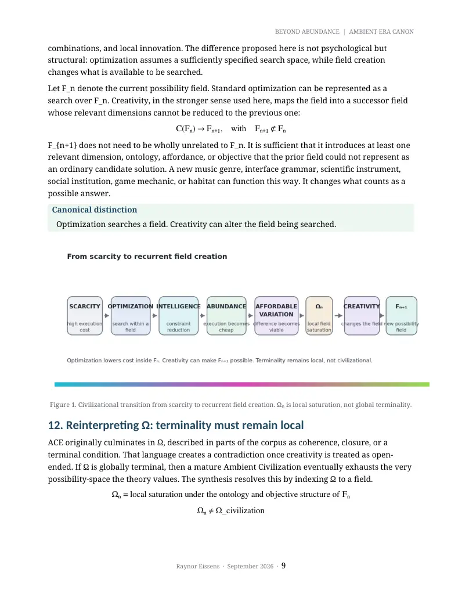

PDF page 1
BEYOND ABUNDANCE | AMBIENT ERA CANON
BEYOND ABUNDANCE
The Ambient Era and the Economics of
Affordable Variation
Ambient Intelligence, Reversibility, Episodic Time, and Open Possibility Space
Raynor Eissens
Ambient Era Canon · Independent Research
Version 1.0 · September 2026 · DOI 10.5281/zenodo.22700782
Central proposition
Abundance lowers the cost of execution. Overabundance begins when viable difference
becomes affordable without making human attention the new scarce resource.
Raynor Eissens · September 2026 · 1
PDF page 2
BEYOND ABUNDANCE | AMBIENT ERA CANON
Abstract
This paper consolidates a 2026 body of work on ambient intelligence, reversibility, chromatic computing, episodic time, and civilizational transition into a single post-abundance thesis. The argument is not that artificial intelligence has already solved scarcity, nor that abundance automatically produces a humane civilization. The narrower claim is that increasingly capable automation can reduce the marginal cost of execution in bounded domains. When that occurs, scarcity does not disappear; bottlenecks migrate toward attention, selection, meaning, trust, differentiation, and exit. The paper therefore distinguishes abundance from overabundance. Abundance is a condition in which execution becomes inexpensive relative to a domain. Overabundance is proposed as a stronger condition in which viable variation also becomes inexpensive, human attentional burden remains bounded, and alternatives remain reversible enough to enter, test, abandon, or replace without disproportionate loss. Under these conditions, possibility-space can reopen rather than merely fill with more instances of the same optimized form.
The synthesis also revises the Ambient Civilization Equation (ACE). Omega (Ω) is treated here not as a globally terminal civilizational state but as local saturation within a possibility field F_n. Optimization searches within F_n; creativity can alter the field itself, yielding F_{n+1}. This reframing preserves terminal coherence locally while keeping civilization globally non- terminal. Chromatic Computing is correspondingly positioned as a complementary state channel and a possible design proxy for reopened variation, while ChronoTrigger is separated into formal ontology, human-system hypothesis, and operational prediction. Thermodynamic language in this paper is systems-theoretic unless a physical quantity is explicitly defined. The result is a map of the Ambient Era corpus: a theory of what intelligence may make affordable after capability and abundance are no longer the primary constraints.
Keywords: ambient intelligence; abundance; overabundance; affordable variation; reversibility; attention; chromatic
computing; episodic time; possibility space; creativity; human-computer interaction; civilizational design.
1. Introduction: the question after abundance
The dominant public discussion around frontier artificial intelligence is understandably
preoccupied with capability, control, safety, governance, scientific discovery, labor substitution,
and the prospect of abundance. These are first-order questions. If powerful systems cannot be
aligned, governed, or made useful, downstream civilizational design is premature. But a second-
order question follows if even part of the capability thesis succeeds: what kind of human
environment should successful intelligence leave behind?
This paper positions the Ambient Era corpus around that question. It does not propose an
alternative theory of AGI and does not claim to replace alignment, economics, ubiquitous
computing, or human-computer interaction. It asks what happens after execution becomes
cheaper. The thesis is that the removal of one bottleneck creates others. A world able to generate
more code, media, designs, plans, objects, and automated action may still be attention-poor,
difficult to exit, culturally homogeneous, temporally extractive, or overwhelmed by low-value
variation. Material or computational abundance is therefore necessary for some futures but
insufficient to define them.
Raynor Eissens · September 2026 · 2
PDF page 3
BEYOND ABUNDANCE | AMBIENT ERA CANON
Core distinction
Optimization makes a solution cheap. Overabundance makes alternatives cheap.
The central move is to treat variation itself as an economic and cognitive variable. If distinct
alternatives are costly to imagine, build, test, understand, coordinate, and abandon, a society can
remain narrow even while production is abundant. If those costs fall while attention and
reversibility remain protected, a broader set of experiments becomes viable. The important
outcome is not infinite output. It is a lower cost of meaningful difference.
This reframing consolidates several earlier Ambient Era components. The Raynor Stack asks
who or what carries continuity and cognitive burden. The Ambient Civilization Equation models
a macro-transition toward ambient conditions. Chromatic work asks whether stable system state
can be carried through low-symbolic perceptual channels. ChronoTrigger investigates local,
episodic temporality within an ambient ontology. Reversibility asks whether entry, action, and
experimentation remain affordable to undo. The present paper treats these as modules of a
single argument rather than as isolated terminal claims.
2. Developmental lineage of the Ambient Era corpus
The corpus did not begin with overabundance as a finished master concept. Its current
coherence is better understood as a developmental lineage than as a retrospective claim that
every early paper was written from a complete plan. That distinction matters. Synthesis is
strongest when it reveals a pattern that emerged through the work rather than pretending that
no revision occurred.
Period Anchor Contribution to this
synthesis
January 2026 The Ambient Phone A post-smartphone
architecture in which
technology carries attention
more quietly; DOI
10.5281/zenodo.18287254.
January 2026 The Raynor Stack Time Attention AI → → →
Warmth Ambience Aura → →
Field; DOI →
10.5281/zenodo.18288632.
Macro-state sequence
February 2026 Ambient Civilization
Equation (ACE)
∅ → 1 → 0 → 1≠0 → 2 → α → Ω;
DOI 10.5281/zenodo.18717506.
February 2026 ChronoTrigger Local time condensation
inside Ω as formal ontology;
record 18719071.
Raynor Eissens · September 2026 · 3
PDF page 4
BEYOND ABUNDANCE | AMBIENT ERA CANON
2026 Chromatic / evolutionary
Color and low-symbolic state
sequence
as a complementary
information layer; Ambient
Evolutionary Sequence DOI
10.5281/zenodo.18685739;
CE-2 Chromatic Encoding DOI
10.5281/zenodo.18763518.
Later 2026 Generative abundance / field
The corpus increasingly
work
distinguishes cheap
generation from inhabitable,
coherent, reversible fields;
e.g. Three Ages of Digital
Culture DOI
10.5281/zenodo.21226168.
The strongest continuity across these works is not a claim that intelligence itself is ambient by
definition. It is a recurring concern with burden: what must the human continuously remember,
interpret, supervise, carry, optimize, or recover? The synthesis developed here treats ambient
intelligence as a possible redistribution of that burden from the individual toward a reversible
environment.
3. Scarcity rewards optimization
Scarcity creates pressure to choose. When labor, materials, computation, attention, time, or
distribution are expensive, systems are rewarded for selecting a small number of repeatable
solutions. Standardization, scale, templates, and conversion funnels are rational responses to
constrained resources. Optimization is therefore not an enemy in this model. It is a powerful
regime for searching a known field under cost pressure.
x* = arg max U(x), x ∈ Fₙ
Here F_n denotes the currently available dimensions of action or design, U(x) the objective being
optimized, and x* the selected solution. Optimization can be sophisticated, multi-objective,
probabilistic, or adaptive; the common property is that the search occurs within a field whose
relevant dimensions and objectives are already sufficiently specified.
A culture dominated by such pressures can become visually and structurally compressed.
Interfaces converge on familiar patterns because the cost of relearning is real. Platforms
standardize because scale rewards predictability. Media formats shorten because distribution
systems value immediate recognition. None of these outcomes is caused by optimization alone,
and visual minimalism is not evidence of scarcity by itself. The narrower point is that repeated
selection pressure can reduce the economic room available for eccentric, slow, ambiguous,
difficult-to-categorize, or weakly monetized forms.
Raynor Eissens · September 2026 · 4
PDF page 5
BEYOND ABUNDANCE | AMBIENT ERA CANON
4. Intelligence as constraint reduction
Artificial intelligence enters this model first as a possible constraint-reduction technology. The
claim must remain bounded. AI does not uniformly lower costs, and many deployments create
new costs in verification, energy, governance, trust, or integration. Yet there is already empirical
evidence that generative assistance can lower execution costs in particular cognitive workflows.
Brynjolfsson, Li, and Raymond studied 5,172 customer-support agents and reported an average
productivity increase of approximately 15 percent after deployment of a generative assistant,
with larger gains among less experienced workers [8].
The significance for this paper is not the magnitude of one workplace effect. It is the mechanism:
part of the cost of execution can migrate from individual expertise and repeated cognitive effort
into an assistive computational layer. When that mechanism generalizes across software, design,
research, coordination, manufacturing, and robotics, it can alter which experiments are
economically plausible.
This is also where the Ambient Era differs from an agent-only framing. A task agent is one
surface of intelligence. Ambient intelligence is the broader condition in which context,
continuity, state, assistance, and coordination increasingly reside in the environment rather
than requiring explicit invocation for every step. Mark Weiser's ubiquitous-computing vision
anticipated computation receding into everyday life [9], and Weiser and Brown's calm-
technology work explicitly linked ubiquitous systems to the management of human attention
[10]. The Ambient Era extends that lineage by asking what happens when generative
intelligence, not merely computation, becomes part of that environment.
5. Abundance does not remove bottlenecks; it migrates them
When one cost falls, the scarce resource often moves elsewhere. Cheap generation can increase
the cost of selection. Cheap communication can increase interruption. Cheap software can
increase maintenance and trust burdens. Cheap entry can coexist with expensive exit. A feed can
contain functionally infinite content while making attention more scarce than before. Therefore
output abundance is not equivalent to a high-quality possibility space.
Bottleneck migration
execution scarcity selection scarcity attention scarcity trust scarcity differentiation → → → →
scarcity exit/reversal cost →
This migration is the key reason the paper introduces a stronger state than abundance. Tesla's
2025 Master Plan Part IV explicitly frames AI, autonomy, energy, manufacturing, and robotics
around sustainable abundance and the removal of constraints [11]. That program is primarily
concerned with making physical capability, mobility, energy, and automated services more
available at scale. The Ambient Era does not need to oppose this. It asks the secondary question:
if physical and execution constraints fall, what conditions prevent the result from becoming
merely more of the same?
Raynor Eissens · September 2026 · 5
PDF page 6
BEYOND ABUNDANCE | AMBIENT ERA CANON
6. Affordable variation
Affordable variation is the central concept of this synthesis. It is not the number of generated
options. A billion near-duplicate images, auto-generated pages, or minor product variants may
increase output while leaving the meaningful action space almost unchanged. Variation matters
when alternatives are materially, cognitively, and institutionally distinct enough to constitute
different viable paths.
Let the following quantities be domain-relative rather than universal constants:
c_e(D): marginal execution cost in domain D.
c_v(D): marginal cost of producing, testing, and evaluating a meaningful variation.
B_a(D): human attentional burden imposed by the system or process.
R(D): effective reversibility, including the ability to exit, undo, substitute, reconfigure, or
recover without disproportionate loss.
For a domain D, a minimal abundance condition can be written as:
A(D) = [ cₑ(D) < τₑ ]
A stronger overabundance condition is proposed as:
OA(D) = [cₑ < τₑ] ∧ [cᵥ < τᵥ] ∧ [Bₐ < τₐ] ∧ [R > τR]
The thresholds are empirical and domain-specific. They do not imply that zero cost, zero burden,
or perfect reversibility are achievable. The purpose of the formalism is to separate four
conditions that are often collapsed into the word abundance.
Definition
Overabundance exists when execution and meaningful variation are both inexpensive,
while human attentional burden remains bounded and exit or reversal remains affordable.
7. Reversibility: cheap creation is not enough
Reversibility is what prevents abundance from becoming capture. A system can make an action
extremely easy to start while making it expensive to undo. A user can create an account cheaply
but lose years of social graph if they leave. An organization can automate a workflow quickly but
become dependent on a proprietary infrastructure. A model can generate thousands of artifacts
at low cost while humans absorb the verification and cleanup burden.
cheap creation + expensive exit ≠ affordable variation
In this paper, reversibility is therefore treated operationally rather than mystically. It can be
approximated through time-to-recover, switching cost, data portability, rollback capability, state
legibility, substitution cost, irrecoverable loss, and cognitive effort required to understand or
reverse an action. The earlier ΔR vocabulary of the Ambient Era corpus can be read at this
civilizational level as shorthand for whether stress, commitment, and change remain
recoverable.
Raynor Eissens · September 2026 · 6
PDF page 7
BEYOND ABUNDANCE | AMBIENT ERA CANON
This translation is important because it makes a previously abstract canon concept testable.
Reversibility need not be a new physical constant. It can be a systems property that determines
whether experimentation truly becomes cheap.
8. Ambient intelligence and bounded attention
If execution becomes inexpensive but human attention becomes the compensating scarce
resource, the system has not achieved the Ambient Era condition proposed here. It has merely
moved the extraction point. Bounded attention is therefore part of the definition of
overabundance rather than an optional ergonomic preference.
The Raynor Stack can be read as a burden-allocation grammar: time attention AI warmth → → →
ambience aura field. In the present synthesis, the literal metaphysics of every term is less → → →
important than the direction of travel. Continuity that previously had to be actively carried by
the user can increasingly be carried by a computational environment. A successful ambient
system asks for central attention when meaning is unstable, consequential, ambiguous, or
requires consent, and recedes when state is stable enough to be carried peripherally.
This connects directly to calm technology. Weiser and Brown argued that good ubiquitous
systems should move information between the center and periphery of attention rather than
demand permanent focus [10]. Ambient intelligence adds contextual inference and generative
assistance, but inherits the same design obligation: power should not automatically translate
into interruption.
9. Chromatic reopening: color as a state channel and design proxy
The chromatic branch of the corpus began with a stronger claim: that color could become a low-
symbolic computational grammar. The synthesis paper narrows and strengthens that claim. A
registered chromatic vocabulary can function as a complementary state channel. Color can carry
stable information about priority, readiness, proximity, confidence, transition, or system
condition without requiring the user to decode full textual descriptions on every encounter.
The word registered is essential because colors do not have one universal computational
meaning. Their semantics arise from mapping, convention, context, accessibility, culture, and
learned association. The word complementary is equally important. W3C accessibility guidance
explicitly requires that color not be the sole visual means of communicating information or state
[12]. A robust chromatic system therefore pairs color with shape, text, position, motion, sound,
or haptics where appropriate.
state → {color, shape, text, position, motion, sound/haptics where appropriate}
Color also plays a second role in this paper: not as proof of civilizational advancement but as a
possible proxy for permitted variation. When production systems optimize aggressively around
a small set of proven forms, visual and interaction diversity can contract. When the cost of
testing alternatives falls, chromatic, spatial, temporal, and formal variation may become
affordable again. This is the meaning of the paper's cultural proposition:
Raynor Eissens · September 2026 · 7
PDF page 8
BEYOND ABUNDANCE | AMBIENT ERA CANON
When a culture over-optimizes, it tends to lose color, mystery, and possibility. When
intelligence becomes ambient and reduces burdens, color can return as a sign that
possibility-space has reopened.
This remains a hypothesis, not a law. Colorful interfaces can be manipulative, superficial, or
merely fashionable. Monochrome systems can be deeply open. The relevant variable is not
pigment count; it is whether the environment tolerates and sustains meaningful difference.
10. Temporal reopening and episodic time
ChronoTrigger (CT) is one of the most speculative components of the earlier corpus. Its internal
ontology treats time as a local condensation event associated with reversible coherence inside Ω.
In its strongest wording, this can sound like a claim about fundamental physics. This paper
explicitly separates three epistemic layers so that the useful design insight does not depend on
accepting a new physical theory of time.
10.1 Formal ontology
Within the internal Ambient Era ontology, ChronoTrigger can remain written as:
ΔR > 0 → T_local
That expression belongs to the formal language of the canon. It is not presented here as
experimentally established physics.
10.2 Human-system hypothesis
The human-system translation is more concrete: when environments carry more coordination
and continuity, people may be less dependent on permanent clock, feed, notification, and output
regimes. Time can be experienced in more bounded episodes: a task begins, matters, resolves,
and ends; the interval afterward is allowed to remain quiet rather than being immediately filled
by another demand.
10.3 Operational prediction
This yields measurable HCI predictions. Compared with a notification-driven equivalent, an
ambient system designed for episodic interaction should be capable of reducing externally
initiated interruptions, increasing uninterrupted idle intervals, producing clearer interaction
boundaries, lowering reorientation cost, and decreasing the fraction of time in which the user
must actively monitor system state.
In scarcity regimes, time is often treated as a continuously monetizable unit. In a sufficiently
abundant environment, some of that pressure can relax. The cultural proposition is therefore
not that clocks disappear, but that not every moment must remain structurally claimed.
11. Optimization searches a field; creativity can change the field
The distinction between optimization and creativity is the conceptual hinge of the paper.
Optimization can discover extraordinary solutions. It can produce novelty, unexpected
Raynor Eissens · September 2026 · 8
PDF page 9
BEYOND ABUNDANCE | AMBIENT ERA CANON
combinations, and local innovation. The difference proposed here is not psychological but
structural: optimization assumes a sufficiently specified search space, while field creation
changes what is available to be searched.
Let F_n denote the current possibility field. Standard optimization can be represented as a
search over F_n. Creativity, in the stronger sense used here, maps the field into a successor field
whose relevant dimensions cannot be reduced to the previous one:
C(Fₙ) → Fₙ₊₁, with Fₙ₊₁ ⊄ Fₙ
F_{n+1} does not need to be wholly unrelated to F_n. It is sufficient that it introduces at least one
relevant dimension, ontology, affordance, or objective that the prior field could not represent as
an ordinary candidate solution. A new music genre, interface grammar, scientific instrument,
social institution, game mechanic, or habitat can function this way. It changes what counts as a
possible answer.
Canonical distinction
Optimization searches a field. Creativity can alter the field being searched.
Figure 1. Civilizational transition from scarcity to recurrent field creation. Ωₙ is local saturation, not global terminality.
12. Reinterpreting Ω: terminality must remain local
ACE originally culminates in Ω, described in parts of the corpus as coherence, closure, or a
terminal condition. That language creates a contradiction once creativity is treated as open-
ended. If Ω is globally terminal, then a mature Ambient Civilization eventually exhausts the very
possibility-space the theory values. The synthesis resolves this by indexing Ω to a field.
Ωₙ = local saturation under the ontology and objective structure of Fₙ
Ωₙ ≠ Ω_civilization
Raynor Eissens · September 2026 · 9

PDF page 10
BEYOND ABUNDANCE | AMBIENT ERA CANON
A field can become saturated in the sense that its known objectives, forms, or meaningful
variants have been explored to the point of diminishing returns. That does not imply that
civilization has exhausted all possible fields. Creativity can reopen the system:
Ωₙ —C→ Fₙ₊₁ → Ωₙ₊₁ —C→ Fₙ₊₂ → …
The end condition is therefore none globally. A genuinely creative civilization is one in which
terminality remains local. This correction also makes the model less totalizing. It does not posit
one perfect final form of society. It posits recurring local closures and renewed openings.
13. Overabundance: not infinite supply, but recurrent openness
Overabundance is often used colloquially to mean glut, oversupply, waste, or excessive
consumption. The term is used more narrowly here. It describes a civilizational capacity to
sustain viable alternatives and reopen fields without proportional increases in human burden. It
is therefore qualitative as well as quantitative.
Condition Failure / outcome Interpretation
Cheap generation + high
Overload More options consume more
attention burden
human cognition.
Cheap execution + low
Homogeneity Many outputs converge on
variation
the same optimized form.
Cheap entry + expensive exit Capture Participation is easy; reversal
is costly.
High variation + low
Noise Difference exists but cannot
coherence
be evaluated or inhabited.
Cheap execution + cheap
Open possibility space Alternatives can be created,
viable variation + bounded
evaluated, entered, and
attention + high reversibility
abandoned without
disproportionate cost.
This framework explains why an infinite feed is not necessarily overabundant in the Ambient
Era sense. Content may be cheap while attention is captured, switching costs are high, and the
actual diversity of meaningful life paths remains narrow. Conversely, a smaller number of well-
supported alternatives can represent a richer possibility-space if they are genuinely distinct and
reversible.
14. Relation to sustainable abundance and frontier AI programs
The Ambient Era thesis is best understood as downstream of, not competitive with, several
major AI programs. Alignment research asks whether powerful systems remain controllable,
corrigible, monitorable, and compatible with human intent. Scientific-AI programs ask whether
models can accelerate discovery. Agentic platforms ask whether AI can become useful personal
Raynor Eissens · September 2026 · 10
PDF page 11
BEYOND ABUNDANCE | AMBIENT ERA CANON
or organizational agency. Tesla's sustainable-abundance framing asks how AI, energy,
autonomy, robotics, and manufacturing can reduce physical scarcity at scale [11].
The present synthesis asks a different question: what kind of environment should success in
those programs make possible? Its primary variables are reversibility, bounded attention, the
cost of viable variation, perceptual state, episodic interaction, and recurrent field creation. It
should not claim to replace the technical disciplines that make capable and safe systems
possible.
Alignment asks what powerful intelligence is allowed to do. The Ambient Era asks what
kind of civilization its success should make possible.
The strongest contrast with sustainable abundance is therefore not 'optimization versus
creativity.' Tesla explicitly treats innovation, first-principles problem solving, and the removal of
constraints as central. The more precise distinction is temporal in the causal chain:
Two-stage question
Sustainable abundance: How do we remove constraints that produce scarcity?
Ambient Era: What must abundance become so that it does not merely produce more of the
same?
A concise formulation is: Musk's abundance thesis is strongest on the removal of physical
constraints. The Ambient Era thesis begins with the secondary question: what happens when the
cost of difference falls too?
15. Research hypotheses and operationalization
The paper is intentionally a synthesis and research program rather than a claim that its
civilizational endpoint has already been observed. Its value therefore depends on generating
propositions that can fail. The following hypotheses are deliberately more modest than the
strongest language in the earlier canon.
1. H1 - Execution-cost hypothesis. In bounded domains, capable AI assistance can reduce c_e for
at least some tasks, users, and organizations, though the effect may be offset by verification,
integration, or governance costs.
2. H2 - Variation-cost hypothesis. When c_v falls, the number of viable experiments should
increase, provided evaluation and coordination costs do not rise faster than generation costs
fall.
3. H3 - Attention-moderation hypothesis. The benefits of low c_v will diminish when B_a rises
beyond a domain-specific threshold; abundant options can reduce effective choice when
selection burden becomes dominant.
4. H4 - Reversibility hypothesis. Higher R should increase experimentation because failure,
switching, and abandonment become less costly.
5. H5 - Chromatic-state hypothesis. For stable, learned system states, a redundant chromatic
channel can reduce symbolic decoding burden relative to text-only state reporting, while
accessibility requires non-color cues.
Raynor Eissens · September 2026 · 11
PDF page 12
BEYOND ABUNDANCE | AMBIENT ERA CANON
6. H6 - Episodic-interaction hypothesis. Ambient systems optimized for bounded interaction
can reduce externally initiated interruptions and increase cleanly delimited episodes
compared with notification/feed-centered systems.
7. H7 - Field-creation hypothesis. Systems or cultures that lower both c_e and c_v while
preserving R will produce more genuinely distinct action/design dimensions than systems
that lower c_e alone.
16. Measurement sketch
A research program around affordable variation can be built using ordinary empirical methods.
Nothing in the core thesis requires a new physical unit. Possible measurements include:
Execution cost: labor minutes, compute cost, monetary cost, error correction, expertise
required, time-to-completion.
Variation cost: time and resources to produce, test, compare, and discard a distinct
alternative.
Attentional burden: interruption rate, task switching, monitoring time, dwell requirements,
subjective workload, reorientation time.
Reversibility: rollback time, switching cost, recoverability, portability, irrecoverable loss,
dependency depth.
Field breadth: number of non-redundant design dimensions or action categories, not raw
output count.
Episodicity: ratio of bounded interaction episodes to continuous monitoring; length and
quality of uninterrupted intervals.
Chromatic state performance: recognition time, error rate, accessibility outcomes, retention,
and cross-context consistency.
These measures would allow the theory to be evaluated domain by domain. A software-
development environment might reach execution abundance before housing, healthcare, or
energy. Overabundance is therefore not assumed to arrive globally or simultaneously.
17. Epistemic layers and disciplined terminology
The earlier Ambient Era corpus often uses thermodynamic, cosmological, and field language at
multiple levels at once. That gave the work a distinctive internal vocabulary, but it also makes it
easy for metaphor, formal ontology, design language, and empirical science to be mistaken for
one another. This synthesis adopts an explicit three-layer rule.
Layer Role Example
Empirical / operational Variables that can be
Interruption frequency,
observed or measured.
rollback cost, task completion
time, color-recognition error.
Raynor Eissens · September 2026 · 12
PDF page 13
BEYOND ABUNDANCE | AMBIENT ERA CANON
Systemic / theoretical Models intended to organize
Lower execution cost can
relations and generate
migrate scarcity toward
testable hypotheses.
attention and selection.
Speculative / formal ontology Internal constructs that
ChronoTrigger local-time
organize the canon but are
condensation; stronger
not presented as established
thermodynamic field claims.
physics.
Terminology rule
Thermodynamic terminology in the Ambient Era framework is used as a systems-theoretic
formalism unless a physical quantity is explicitly defined.
This rule does not require abandoning speculative work. It makes clear what kind of claim is
being made and what kind of evidence would be needed to strengthen it.
18. Cultural morphology: color, mystery, and the return of difference
The cultural intuition motivating this paper is that periods of technical transition often permit
unusually diverse forms because conventions have not yet stabilized. Early web design, early
electronic music scenes, and the visual language of personal computing offer familiar examples:
inconsistent, inefficient, sometimes ugly, but also full of unexplored formal possibilities. Later
optimization can improve usability and quality while also narrowing the acceptable grammar.
The argument is not that the 1990s were inherently more creative, nor that contemporary design
is intrinsically sterile. The relevant dynamic is the cost of divergence. When distribution,
production, learning, and prototyping are expensive, deviation from a known template carries
risk. When intelligence lowers those costs, more people can afford to test idiosyncratic
directions. The Ambient Era prediction is therefore conditional: if AI reduces burdens without
replacing them with attention capture or platform lock-in, cultural variation can become
cheaper to sustain.
This is why color functions as a useful emblem in the corpus. Color is not the destination. It is a
visible reminder that an environment can permit multiple simultaneous states without forcing
them into a single textual or optimized form. The deeper target is plural, reversible possibility.
19. Off-world expansion as a limiting illustration
The corpus sometimes extends the Ambient Era toward off-world habitats. That should be
treated as an illustration rather than a necessary prediction. If a mature civilization repeatedly
saturates local fields and seeks genuinely new physical constraints, new habitats would
represent an extreme form of possibility-field creation: different ecologies, materials, temporal
regimes, architectures, and social conditions. But the theory does not depend on interplanetary
or interstellar settlement. New fields can be cultural, scientific, institutional, artistic,
computational, or local.
Raynor Eissens · September 2026 · 13
PDF page 14
BEYOND ABUNDANCE | AMBIENT ERA CANON
The general principle is simply that intelligence need not culminate in the perfect optimization
of the world it inherits. It can lower the cost of making other worlds possible.
20. Limitations
Several limitations should remain explicit. First, there is no evidence that AI will necessarily
produce economy-wide abundance, let alone the stronger state defined here. Second, lower
generation cost can increase noise, fraud, environmental cost, inequality, or concentration.
Third, meaningful variation is difficult to measure because novelty can be superficial while
conventional forms can be deeply valuable. Fourth, reversibility has domain-specific limits;
some medical, ecological, political, and infrastructural actions are intrinsically hard to reverse.
Fifth, attention is not a simple scalar resource and may be shaped by culture, disability, task,
affect, and preference. Sixth, the chromatic and temporal proposals require controlled HCI
testing rather than inference from aesthetics. Finally, the corpus' speculative ontology should
not be mistaken for established thermodynamics or cosmology.
These limitations are not peripheral to the argument. They define the difference between
abundance as raw capability and overabundance as an inhabitable civilizational condition.
21. Conclusion
The Ambient Era corpus can be consolidated around one post-capability question: what becomes
possible when intelligence reduces the cost of execution, and what additional conditions are
required for that success to remain humanly open?
This paper proposes that abundance is not the endpoint. Cheap execution can coexist with
captured attention, expensive exit, cultural convergence, continuous temporal pressure, and a
flood of redundant output. The stronger condition is affordable variation: materially, cognitively,
and institutionally distinct alternatives can be generated, evaluated, entered, and abandoned at
sufficiently low cost. Reversibility and bounded attention determine whether that variation is
genuinely cheap or merely displaced burden.
The resulting civilizational model is intentionally non-terminal. Ω is local saturation of a
possibility field, not the end of civilization. Optimization searches a field; creativity can change
the field being searched. The sequence therefore remains open:
scarcity → optimization → intelligence → abundance → affordable variation → Ωₙ —C→ Fₙ₊₁ → …
The purpose of intelligence, in this synthesis, is not indefinite optimization of a fixed
field. It is the reduction of constraint required to keep new fields possible.
A mature intelligence does not merely optimize the world it inherits. It lowers the cost
of making other worlds possible.
References
[1] Eissens, R. (2026). The Ambient Phone: Thermodynamic Architecture for Humane Technology. Zenodo.
https://doi.org/10.5281/zenodo.18287254
Raynor Eissens · September 2026 · 14
PDF page 15
BEYOND ABUNDANCE | AMBIENT ERA CANON
[2] Eissens, R. (2026). The Raynor Stack. Zenodo. Original v1.0 DOI: https://doi.org/10.5281/zenodo.18288632; later canonical record DOI: https://doi.org/10.5281/zenodo.18323467
[3] Eissens, R. (2026). Ambient Civilization Equation (ACE-1.0). Zenodo. https://doi.org/10.5281/zenodo.18717506
[4] Eissens, R. (2026). ChronoTrigger (CT): Local Time Condensation in Ω - A Unified Ontology of Ambient Time. Zenodo
record 18719071. https://zenodo.org/records/18719071
[5] Eissens, R. (2026). The Ambient Evolutionary Sequence. Zenodo. https://doi.org/10.5281/zenodo.18685739
[6] Eissens, R. (2026). CE-2 - Chromatic Encoding. Zenodo. https://doi.org/10.5281/zenodo.18763518
[7] Eissens, R. (2026). Three Ages of Digital Culture: From Mechanical Reproduction to Generative Abundance. Zenodo.
https://doi.org/10.5281/zenodo.21226168
[8] Brynjolfsson, E., Li, D., & Raymond, L. (2025). Generative AI at Work. The Quarterly Journal of Economics, 140(2),
889-942. https://doi.org/10.1093/qje/qjae044
[9] Weiser, M. (1991). The Computer for the 21st Century. Scientific American, 265(3), 94-104.
https://doi.org/10.1038/scientificamerican0991-94
[10] Weiser, M., & Brown, J. S. (1996). The Coming Age of Calm Technology. Xerox PARC.
https://calmtech.com/papers/coming-age-calm-technology
[11] Tesla. (2025, September 1). Master Plan Part IV: Sustainable Abundance. https://www.tesla.com/master-plan-part-4
[12] W3C Web Accessibility Initiative. (2025). Understanding Success Criterion 1.4.1: Use of Color.
https://www.w3.org/WAI/WCAG22/Understanding/use-of-color
Raynor Eissens · September 2026 · 15